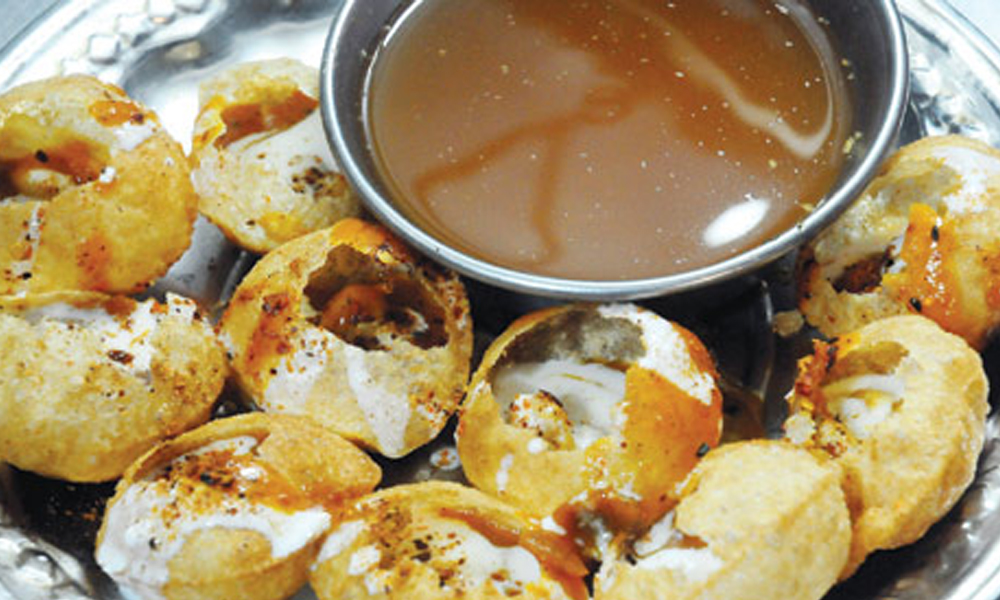
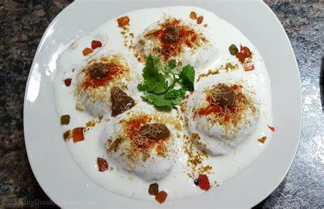
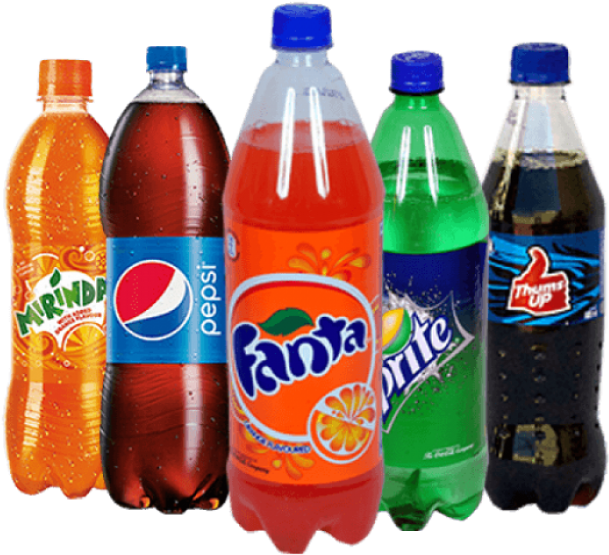
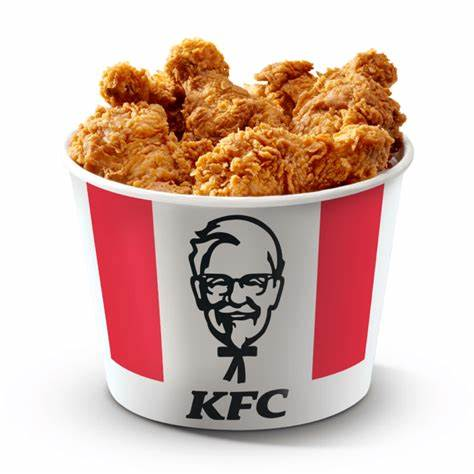

Our Menu
| KFC | |||||
|---|---|---|---|---|---|
| Item | Qty | price | |||
| Samosa | 1 | $1.50 | |||
| Gol Gapy | 1 | $2.50 | |||
| Dahi Bhlay | 1 | $3.25 | |||
| Cold Drink | 1 | $2.00 | |||
| Ice Cream | 1 | $3.50 | |||
| Lays | 1 | $5.00 | |||
| Drum Stick | 1 | $5.00 | |||

 |
 |  |
|  |  |
 |
|  |
| KFC | |||||
|---|---|---|---|---|---|
| Item | Qty | price | |||
| Samosa | 1 | $1.50 | |||
| Gol Gapy | 1 | $2.50 | |||
| Dahi Bhlay | 1 | $3.25 | |||
| Cold Drink | 1 | $2.00 | |||
| Ice Cream | 1 | $3.50 | |||
| Lays | 1 | $5.00 | |||
| Drum Stick | 1 | $5.00 | |||
Top `